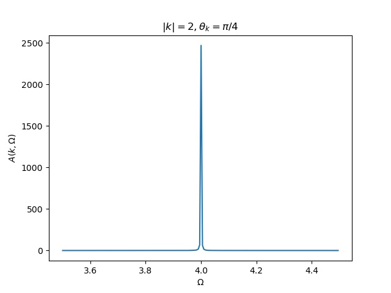

d-wave (dissuasion)
1. fig



2. code
! ==============================================================================
! program : pWaveSinglePole
! version : 02-Dec-2019
! author : Zeqing Wang
! purpose : calculate the RF spectrum of p-wave sue single pole approximation
! reference:
! ==============================================================================
! ==============================================================================
! program : param
! type : module
! version : 05-Dec-2019
! purpose : set the precision
! comment :
! ==============================================================================
module prec
implicit none
integer, parameter :: rkind=16 ! the precision
end module prec
! ==============================================================================
! ==============================================================================
! program : param
! type : module
! version : 05-Dec-2019
! purpose : set the precision
! comment :
! ==============================================================================
module param
use prec
implicit none
real(kind=rkind), parameter :: pi=acos(-1.0_rkind)
real(kind=rkind), parameter :: beta=1_rkind, mu=-1_rkind, rkv=&
&-1.0_rkind, rp=1.0/30.0
real(kind=rkind), parameter :: phi_k=0.0 ! phi_k 是无关的量, 不影响结果
end module param
! ==============================================================================
! ==============================================================================
! program : pWavesinglePole
! type : program
! version : 19-Dec-2019
! comment : the main program
! ==============================================================================
program pWaveSinglePole
use prec
use param
implicit none
integer, parameter :: dim=50 ! 画图取点的个数
integer :: i ! 循环变量
real(kind=rkind) :: x(dim) ,y(dim) ! 纵坐标
real(kind=rkind) :: sigma, spectrum_k_thetak ! 画图用到的函数
real(kind=rkind) :: k=2.0, theta_k = pi/2 ! 给定 k 和 theta_k 画图
real(kind=rkind) :: start, end ! 用于计时的变量
interface
function linspace(a, b, dim) result(list)
use prec
integer :: dim
real(kind=rkind) :: a, b, list(dim)
end function linspace
end interface
! 计时开始
call cpu_time(start)
x = linspace(-20.0_rkind, 10.0_rkind, dim)
! x = linspace(0.0_rkind, pi, dim)
do i = 1, dim
y(i) = sigma(x(i), k, theta_k)
! y(i) = spectrum_k_thetak(x(i), k, theta_k)
print *, 'calculating...', i, 'of', dim
end do
! 计时结束
call cpu_time(end)
print *, 'calculate finish! time is ', end - start, 'seconds'
! 将数据保存到文件, 用于画图
open(1, file='./data/datax.csv')
write(1, *) x
close(1)
open(2, file='./data/datay.csv')
write(2, *) y
close(2)
print *, 'save data finish!'
end program pWaveSinglePole
! ==============================================================================
! ==============================================================================
! program : spectrum
! type : function
! version : 19-Dec-2019
! purpose : calculate spectrum function
! comment : 还是只有虚部
! ==============================================================================
function spectrum_k_thetak(omega, k, theta_k)
use prec
use param
implicit none
real(kind=rkind) :: omega, k, theta_k
real(kind=rkind) :: spectrum_k_thetak
real(kind=rkind) :: sigma, sigma_real, sigma_imag
sigma_imag = sigma(omega, k, theta_k)
! print *, sigma_imag
sigma_real = 0.0_rkind
spectrum_k_thetak = -2*sigma_imag / ((omega - k**2 - sigma_real)**2 +&
& sigma_imag**2)
end function spectrum_k_thetak
! ==============================================================================
! ==============================================================================
! program : sigma
! type : function
! version : 18-Dec-2019
! purpose : calculate self energy
! comment : 积掉 phi_q . 还是只有虚部
! ==============================================================================
function sigma(omega, k, theta_k)
use prec
use param
implicit none
real(kind=rkind) :: sigma
real(kind=rkind) :: omega, k, theta_k, theta_q, phi_q
real(kind=rkind) :: gaussQuad, r1, r2, x, cos_theta_kq, deltapart
integer, parameter :: n=50
! 将没有积掉 phi_q 时的自能接口进来
interface
function sigma_phiq(omega, k, theta_k, phi_q)
use prec
implicit none
real(kind=rkind) :: omega, k, theta_k, phi_q
real(kind=rkind) :: sigma_phiq
end function sigma_phiq
end interface
sigma = gaussQuad(fun, 0.0_rkind, 50.0_rkind, n)
contains
function fun(phi_q)
use prec
implicit none
real(kind=rkind) :: phi_q, fun
fun = sigma_phiq(omega, k, theta_k, phi_q)
end function fun
end function sigma
! ==============================================================================
! ==============================================================================
! program : sigma_phiq
! type : function
! version : 18-Dec-2019
! purpose : calculate self energy
! comment : 这里把 q 积掉了, 还乘下 theta_q, phi_q 没有积
! 再积掉 theta_q, 还乘下 phi_q 没有积
! ==============================================================================
function sigma_phiq(omega, k, theta_k, phi_q)
use prec
use param
implicit none
real(kind=rkind) :: omega, k, theta_k, theta_q, phi_q
real(kind=rkind) :: sigma_phiq, sp
real(kind=rkind) :: gaussQuad, r1, r2, x, cos_theta_kq, deltapart
integer, parameter :: n=50
! 将没有积掉 theta_q 时的自能接口进来
interface
function sigma_thetaq_phiq(omega, k, theta_k, theta_q, phi_q)
use prec
implicit none
real(kind=rkind) :: omega, k, theta_k, theta_q, phi_q
real(kind=rkind) :: sigma_thetaq_phiq
end function sigma_thetaq_phiq
end interface
sigma_phiq = gaussQuad(fun, 0.0_rkind, 50.0_rkind, n)
! 将没有积掉 theta_q 的自能定义成一个 theta_q 的函数
contains
function fun(theta_q)
use prec
implicit none
real(kind=rkind) :: theta_q, fun
fun = sigma_thetaq_phiq(omega, k, theta_k, theta_q, phi_q)
end function fun
end function sigma_phiq
! ==============================================================================
! ==============================================================================
! program : sigma_thetaq_phiq
! type : function
! version : 18-Dec-2019
! purpose : calculate self energy
! comment : 这里把 q 积掉了, 还乘下 theta_q, phi_q 没有积
! ==============================================================================
function sigma_thetaq_phiq(omega, k, theta_k, theta_q, phi_q)
use prec
use param
implicit none
real(kind=rkind) :: omega, k, theta_k, theta_q, phi_q
real(kind=rkind) :: sigma_thetaq_phiq, sp
real(kind=rkind) :: cauthyGaussQuad, r1, r2, x, cos_theta_kq, deltapart
real(kind=rkind) :: delta ! b^2 - 4*a*c
! 将没有积掉 q 时的自能接口进来
interface
function numerator_of_sigma(omega, k, q, theta_k, theta_q, phi_q)
use prec
implicit none
real(kind=rkind) :: omega, k, q, theta_k, theta_q, phi_q
real(kind=rkind) :: numerator_of_sigma
end function numerator_of_sigma
end interface
x = cos_theta_kq(theta_k, theta_q, phi_k, phi_q)
! x=0
delta = 4*k**2*x**2 - 2*(omega + k**2 +mu + rkv)
if (delta .gt. 0.0_rkind) then
r1 = 2*k*x - sqrt(delta)
r2 = 2*k*x + sqrt(delta)
sigma_thetaq_phiq = deltapart(fun, r1, r2) ! 计算出虚部
else
sigma_thetaq_phiq = 0 ! 计算出虚部
end if
! 将没有积掉 q 的自能定义成一个 q 的函数(便于计算虚部, 去掉了分母)
contains
function fun(q)
use prec
implicit none
real(kind=rkind) :: q, fun
fun = numerator_of_sigma(omega, k, q, theta_k, theta_q, phi_q)
end function fun
end function sigma_thetaq_phiq
! ==============================================================================
! ==============================================================================
! program : sigma_q_thetaq_phiq
! type : function
! version : 05-Dec-2019
! purpose : calculate self energy
! comment : 这里有三个待积变量, q, theta_q, phi_q
! ==============================================================================
function sigma_q_thetaq_phiq(omega, k, q, theta_k, theta_q, phi_q)
use prec
use param
implicit none
real(kind=rkind) :: omega, k, theta_k, q, theta_q, phi_q
! real(kind=rkind) :: phi_k=0_rkind
real(kind=rkind) :: real, imag
real(kind=rkind) :: sigma_q_thetaq_phiq
real(kind=rkind) :: kp2 !square of k'
real(kind=rkind) :: cos_theta_kq, bose, cos_theta_kprime, sylm10
kp2 = 4*k**2 + q**2 - 4*k*q*cos_theta_kq(theta_k, theta_q, phi_k, phi_q) !k'^2
sigma_q_thetaq_phiq = bose(k**2 + q**2 - 2*cos_theta_kq(theta_k, theta_q, phi_k&
&, phi_q) - mu, beta)&
& - bose(q**2/2 - 2*mu - rkv, beta)
sigma_q_thetaq_phiq = sigma_q_thetaq_phiq / (omega + k**2 + q**2/2 -2*k*q&
&*cos_theta_kq(theta_k, theta_q, phi_k, phi_q) + mu +&
& rkv)
sigma_q_thetaq_phiq = sigma_q_thetaq_phiq * q**2 * kp2 * sin(theta_q) *&
& sylm10(cos_theta_kprime(k, q, cos_theta_kq(theta_k, theta_q, phi_k,&
& phi_q))) * rp * 2 / (pi**2)
end function sigma_q_thetaq_phiq
! ==============================================================================
! ==============================================================================
! program : numerator_of_sigma
! type : function
! version : 24-Dec-2019
! purpose : calculate self energy
! comment : 这里有三个待积变量, q, theta_q, phi_q
! function sigma_q_thetaq_phiq 去掉分母, 用于计算虚部
! ==============================================================================
function numerator_of_sigma(omega, k, q, theta_k, theta_q, phi_q)
use prec
use param
implicit none
real(kind=rkind) :: omega, k, theta_k, q, theta_q, phi_q
! real(kind=rkind) :: phi_k=0_rkind
real(kind=rkind) :: real, imag
real(kind=rkind) :: numerator_of_sigma
real(kind=rkind) :: kp2 !square of k'
real(kind=rkind) :: cos_theta_kq, bose, cos_theta_kprime, sylm10
kp2 = k**2 + q**2/4 - k*q*cos_theta_kq(theta_k, theta_q, phi_k, phi_q) !k'^2
numerator_of_sigma = bose(k**2 + q**2 - 2*cos_theta_kq(theta_k, theta_q, phi_k&
&, phi_q) - mu, beta)&
& - bose(q**2/2 - 2*mu - rkv, beta)
numerator_of_sigma = numerator_of_sigma * q**2 * kp2 * sin(theta_q) *&
& sylm10(cos_theta_kprime(k, q, cos_theta_kq(theta_k, theta_q, phi_k,&
& phi_q))) * rp * 2 / (pi**2)
end function numerator_of_sigma
! ==============================================================================
! ==============================================================================
! program : cos_theta_kprime
! type : function
! version : 05-Dec-2019
! purpose : known k, q, and the angle between k and q, calculate cos(k'),
! where k' is the angle between k and -k+q
! comment :
! ==============================================================================
function cos_theta_kprime(k, q, cos_theta_kq)
use prec
implicit none
real(kind=rkind), intent(in) :: k, q, cos_theta_kq
real(kind=rkind) :: cos_theta_kprime
cos_theta_kprime = (2*k*q*cos_theta_kq - 2*k**2) / (2*k*sqrt(k**2 + q**2 -&
& 2*k*q*cos_theta_kq))
end function cos_theta_kprime
! ==============================================================================
! ==============================================================================
! program : cos_theta_kq
! type : function
! version : 05-Dec-2019
! purpose : known theta_k, theta_q, phi_k, phi_q, calculate the cosine of
! angle between k and q
! comment :
! ==============================================================================
function cos_theta_kq(theta_k, theta_q, phi_k, phi_q)
use prec
implicit none
real(kind=rkind), intent(in) :: theta_k, theta_q, phi_k, phi_q
real(kind=rkind) :: cos_theta_kq
cos_theta_kq = sin(theta_k)*sin(theta_q)*cos(phi_k - phi_q) + cos(theta_k)&
&*cos(theta_q)
end function cos_theta_kq
! ==============================================================================
! ==============================================================================
! program : bose
! type : function
! version : 05-Dec-2019
! purpose : Bose-Einstein function
! comment : n(x, beta) = 1 / (e^(beta*x) - 1)
! beta: 1/Temperature x: energy
! ==============================================================================
function bose(energy, beta)
use prec
implicit none
real(kind=rkind), intent(in) :: energy, beta
real(kind=rkind) :: bose
if (energy .lt. 0.0_rkind) then
print *, '=======Energy is negtive, Unphysical!======'
stop
end if
bose = exp(-beta*energy) / (1 - exp(- beta*energy))
end function bose
! ==============================================================================
! ==============================================================================
! program : sylm10
! type : function
! version : 05-Dec-2019
! purpose : square of spherical harmonica function
! comment : |Y_l=1 m=0(x)|^2
! ==============================================================================
function sylm10(x)
use prec
use param
implicit none
real(kind=rkind), intent(in) :: x
real(kind=rkind) :: sylm10
sylm10 = 3/(4*pi) * cos(x)**2
end function sylm10
! ==============================================================================
! ==============================================================================
! program : cauthyGaussQuad
! type : function
! version : 05-Dec-2019
! purpose : calculate the cauthy principal value integral of function "fun"
! from a to b with singlarity sp
! comment :
! ==============================================================================
function cauthyGaussQuad(fun, a, b, n, sp)
use prec
implicit none
integer, intent(in) :: n
real(kind=rkind), intent(in) :: a, b, sp
! 被积函数接口
interface
function fun(x)
use prec
implicit none
real(kind=rkind) :: x, fun
end function fun
end interface
integer :: j
real(kind=rkind) :: cauthyGaussQuad, diffa, diffb, ff, sgq1, sgq2, gaussQuad
diffa = sp - a
diffb = b - sp
! 计算积分
if (diffa .lt. diffb) then
sgq1 = gaussQuad(ffun, 0.0_rkind, sp-a, n)
sgq2 = gaussQuad(fun, 2*sp-a, b, n)
else
sgq1 = gaussQuad(ffun, 0.0_rkind, b-sp, n)
sgq2 = gaussQuad(fun, a, 2*sp-b, n)
end if
cauthyGaussQuad = sgq1 + sgq2
contains
function ffun(t)
use prec
implicit none
real(kind=rkind) :: t, ffun
ffun = fun(t+sp) + fun(-t+sp)
end function ffun
end function cauthyGaussQuad
! ==============================================================================
! ==============================================================================
! program : gaussQuad
! type : function
! version : 03-Dec-2019
! purpose : calculate the integral of function "fun" from a to b
! comment :
! ==============================================================================
function gaussQuad(fun, a, b, n)
use prec
implicit none
integer, intent(in) :: n
real(kind=rkind), intent(in) :: a, b
! 被积函数接口
interface
function fun(x)
use prec
implicit none
real(kind=rkind) :: x, fun
end function fun
end interface
integer :: j
real(kind=rkind) :: gaussQuad, r(2, n), fxi(n)
! 根与权重接口
interface
function node_weight(n) result(r)
use prec
implicit none
integer :: n
real(kind=rkind) :: r(2, n)
end function node_weight
end interface
! 计算积分
r = node_weight(n)
do j = 1, n
fxi(j) = fun((r(1, j)*(b - a) + a + b) / 2)
end do
gaussQuad = dot_product(r(2, :), fxi)
gaussQuad = gaussQuad * (b - a) / 2
end function gaussQuad
! ==============================================================================
! ==============================================================================
! program : node_weight
! type : function
! version : 02-Dec-2019
! purpose : calculate the root of n-order Legendre polynomial, and weight
! comment : use the method in reference
! ==============================================================================
function node_weight(n) result(r)
use prec
implicit none
integer :: n, i, iter, k
real(kind=rkind) :: r(2, n), x, f, df, dx
real(kind=rkind), parameter :: pi = acos(-1._rkind)
real(kind=rkind), allocatable :: p0(:), p1(:)
real(kind=rkind), allocatable :: tmp(:)
! 利用递推公式求 n 阶 Legendre 多项式的系数, 幂次从高到低排列, 结果就是数组 p1
p0 = [1.0_rkind]
p1 = [1._rkind, 0._rkind]
do i = 2, n
tmp = ((2*i - 1)*[p1, 0._rkind] - (i - 1)*[0._rkind, 0._rkind, p0]) / i
p0 = p1; p1 = tmp
end do
! 这个函数将 n 阶的情况的 根存在 r(1,:) 中, 权重存在 r(2, :) 中
do i = 1, n
x = cos(pi*(i - .25_rkind) / (n + .5_rkind))
do iter = 1, 10
f = p1(1); df = 0._rkind
do k = 2, size(p1)
df = f + x*df ! 得到的是 P_n'(x_0) 的值
f = p1(k) + x*f ! 得到的是 P_n(x_0) 的值
end do
dx = f/df
x = x - dx
if (abs(dx)<10*epsilon(dx)) exit
end do
r(1, i) = x
r(2, i) = 2/((1 - x**2)*df**2)
end do
end function node_weight
! ==============================================================================
! ==============================================================================
! program : linspace
! type : function
! version : 19-Dec-2019
! purpose : similar to 'numpy.linspace' in python
! comment :
! ==============================================================================
function linspace(a, b, dim) result(list)
use prec
implicit none
real(kind=rkind) :: a, b
integer :: dim
real(kind=rkind) :: list(dim)
integer :: i
real(kind=rkind) :: diff
do i = 1, dim
list(i) = i - 1 ! i-1 instead of i, in order to be the same as
! numpy.linspace
end do
diff = b - a
list = a + list * diff/dim
end function linspace
! ==============================================================================
! ==============================================================================
! program : deltapart
! type : function
! version : 18-Dec-2019
! purpose : get the delta part of \int_0 ^\inf f(x) / ((x-r1)(x-r2) + i0) dx
! comment : the result is -pi * (f(r1) - f(r2)) / (r1 - r2)
! 注意, 这个程序没有得到验证!
! ==============================================================================
function deltapart(fun, r1, r2)
use prec
use param
implicit none
real(kind=rkind) :: r1, r2, deltapart
! 函数 f(x) 的接口
interface
function fun(x)
use prec
implicit none
real(kind=rkind) :: x, fun
end function fun
end interface
if ((r1 .lt. 0) .and. (r2 .lt. 0)) then ! 两个根都小于零, 没有虚部
deltapart = 0
! print *, 'no root'
else if (r1 .lt. 0) then ! r1<0, r1>0, 取 r2
deltapart = pi * fun(r2) / (r1-r2)
! print *, 'root2'
! print *, fun(r2)
else if (r2 .lt. 0) then ! r1<0, r2>0, 取 r1
deltapart = -pi * fun(r1) / (r1-r2)
! print *, 'root1'
else ! 两个根都大于0
deltapart = -pi * (fun(r1) - fun(r2)) / (r1-r2)
! print *, '2 roots'
end if
end function deltapart
! ==============================================================================